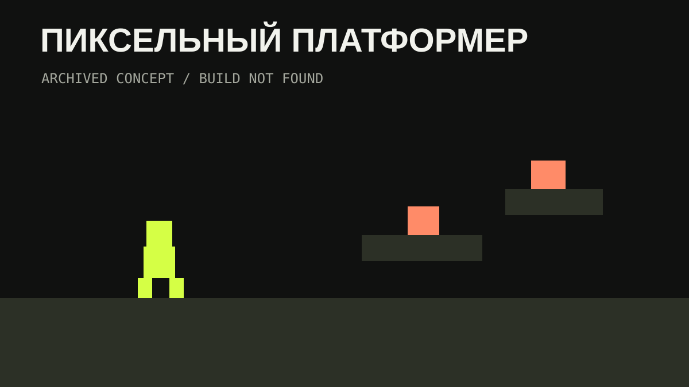

ArchivedGAME
Пиксельный платформер_
2D-платформер с персонажем, зонами, врагами, анимациями и боссами. Сборка проекта сейчас отсутствует в файловой библиотеке, поэтому карточка сохранена без выдуманного файла запуска.

Что внутри
2D-платформерПиксельная игровая концепция.
УровниЗоны, враги и боссы.
АрхивОписание сохранено, файл сборки не найден.